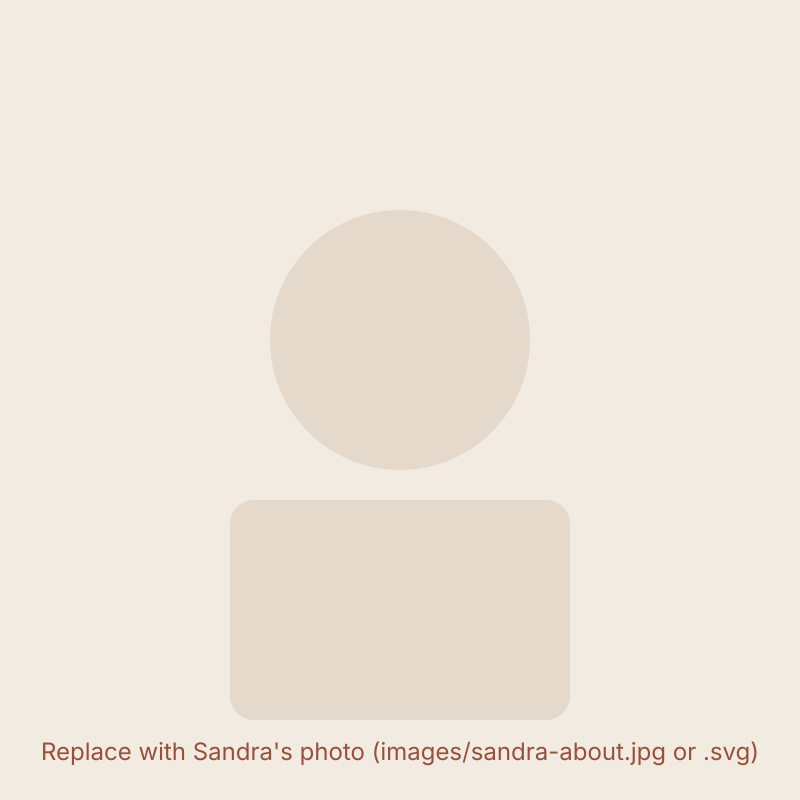

Does this sound familiar?
- You have real expertise, but you're barely visible online.
- Your camera roll is full of photos, but you have no system for turning them into content.
- You take ten selfies and still don't like a single one.
- You keep telling yourself you'll start posting "next week."
- You sit down to write a caption and freeze — you just don't know what to say.
- Typical influencer-style content makes you cringe, so you avoid posting altogether.
- You've taken content courses or read the advice, and you still can't stay consistent.
None of this means you're lazy or failing. It usually just means no one ever showed you a process that works with the photos, the expertise and the personality you already have.
What you'll walk away with after five days
A clearer personal-brand direction
A simple, honest answer to "what do I actually want to be known for?" — one you can use again and again.
Content ideas tied to your expertise
A working list of things to post that come directly from what you already know and do.
A week of authentic posts to work from
Real content, built during the live sessions — not a template you'll never open again.
Better use of the photos you already have
A new way of looking at your camera roll, so you stop feeling like you need a professional shoot first.
A simpler process for deciding what to publish
Less overthinking, less second-guessing, more actually hitting "post."
A practical starting point
Somewhere real to begin showing up consistently — built by you, for you, during the series.
Inside the five days
This is a live experience — you'll be creating alongside Sandra, not just watching.
-
Day 1
Clarify what you want to be known for
Get honest, practical clarity on your personal-brand direction — before you write a single caption.
-
Day 2
Find more possibilities in the photos you already have
Look at your existing camera roll with new eyes and discover what's already usable.
-
Day 3
Turn your expertise into useful content ideas
Turn what you know into posts your audience actually wants to see.
-
Day 4
Make your content feel natural, personal and publishable
Shape your ideas into something that sounds like you — not generic, not performative.
-
Day 5
Bring everything together into a usable week of content
Leave with a real week of content ready to publish, plus a simpler way to keep going.
Why this is different
You'll be guided live, and you'll create your own content as you go — not after the fact.
- No professional photoshoot required
- No huge following required
- No need to become an influencer
- No need to sound like someone else
- No need to start with a blank page
The focus is on authentic visibility and practical implementation — real content, made from what you already have, during real live sessions with Sandra.

A note from Sandra
I built SSELFIE after watching so many talented women delay showing up online — not because they lacked expertise, but because the whole content process felt complicated, performative and disconnected from who they really are.
The Show Up Everyday Series is my way of walking you through a simpler, more honest process — live, together, using what you already have.
[INSERT VERIFIED CREDENTIALS, CUSTOMER RESULTS OR APPROVED TESTIMONIAL]
What to bring with you
- Three to five existing phone photos
- Your area of expertise or business
- A rough idea of who you want to reach
- A willingness to participate and create during the sessions
Save your free seat
The Show Up Everyday Series · [INSERT DATES] · [INSERT TIME AND TIMEZONE] · Free & live online
Frequently asked questions
Is the series really free?
Yes. The Show Up Everyday Series is completely free to join.
Do I need professional photos?
No. You'll work with three to five existing phone photos — no photoshoot needed.
Do I need to be a coach or consultant?
No. This is for any woman with expertise, a business, or a service she wants to be visible for.
Do I need a large following?
No. This series is about showing up authentically, whatever size your audience is right now.
Do I need to know how to use AI?
No prior experience is needed. Everything is explained step by step during the live sessions.
What do I need to bring?
Three to five existing phone photos, your area of expertise, a rough idea of who you want to reach, and a willingness to participate.
Will the sessions be live?
Yes. All five sessions are live, so you can create alongside Sandra in real time.
Will recordings be available?
[INSERT RECORDING DETAILS]
Where will I receive the links and reminders?
By email, and inside the WhatsApp group you'll join right after registering.
Your expertise shouldn't stay hidden
Not because you don't know what to post, and not because you dislike the photos on your phone. Join the free 5-day Show Up Everyday Series and create a week of authentic personal-brand content with Sandra.
Save My Free Seat